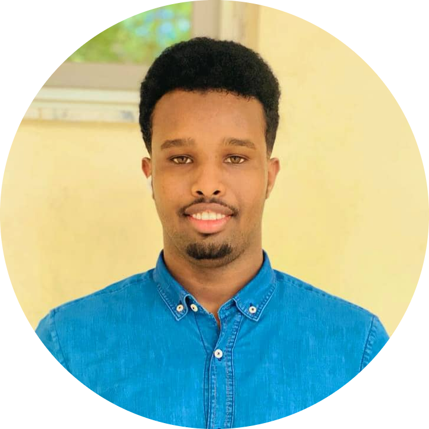

My Profile

I am Abas Iman, Computer Science Student @
Binus University
An inquisitive, goal-oriented student with experience in program management
and has a keen interest
in coding and leadership. Has developed excellent communication
and problem-solving skills and is
committed to furthering his computational abilities.
Education
- Abaarso School of science and Technology
- High School Diploma
2016-2021
- Binus University
- Computer Science
2022-present
- Udemy, Web Development
- HTML, CSS, and Javascript
AUG. 19, 2022-present
Contact me
Experience
- 09/2020 - 03/2021
-Worked closely with colleagues and drafted plans for a weekly school-wide program to help Abaarso students strengthen their writing, communication, and math skills.
-Wrote weekly follow-up emails and announcements.
-Gathered quarterly (2-months) data on the performance of students based on the number of times they
show-up versus their improvement in communication and writing skills.
Analyzed that data and made
changes to the programs accordingly.
-Enhanced my communication skills in terms of oral and writing over the course of my career as
coordinator at an enrichment program
- (01/2017 - 05/2018)
-Collected and analyzed data from IDPs in Mogadishu
- Held meetings with camps managers on behalf of the field program manager to discuss possible funds
- (01/2017 - 05/2018)
-Taught children from a nearby village basic English and math.
-Managed a class room of 12-15 students, handled discipline, and acted as a positive role model.
-Engaged in discussions regarding how to improve the quality of lessons. Wrote weekly lesson plans and
gave feedback twice a week.
-Organized performances of students at big events to showcase their accomplishments.
Presented two
awards to two students to applaud and recognize their achievements.